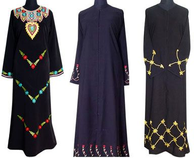

Etiqueta
Si bien el código de etiqueta está estrictamente regido por el islam, el uso de vestimenta musulmana no es obligatoria.256 Al igual que en los demás emiratos de la federación, los hombres suelen usar una kandura, túnica blanca que se extiende hasta las rodillas y que está confeccionada de lana o algodón; las mujeres visten una abaya, túnica negra que les cubre la mayor parte del cuerpo257 y que representa un «símbolo de modestia». Deben usarla en la vía pública, pudiendo removerla cuando ingresan a un edificio o local.258 Cabe mencionarse que el uso de prendas tradicionales es aconsejable mayormente durante la celebración del Ramadán.259 Existen varios puntos de venta en Dubái donde ofrecen tanto la vestimenta tradicional, así como otro tipo de ropa que incluye minifaldas y escotes.259 Aunque los turistas pueden utilizar prendas cortas, existe una recomendación para que cubran sus rodillas y hombros en lugares públicos,260 incluidas las playas.
A lo largo del emirato hay minaretes de mezquitas a los cuales acuden los musulmanes a rezar cinco veces al día,262 y que pueden ser visitados también por los extranjeros. En el Ramadán está prohibido que sus habitantes ingieran alimentos o bebidas en las vías públicas durante el día, aunque en el caso de los turistas hay cierta tolerancia, siempre y cuando lo hagan en algunos locales previamente designados por el gobierno. En el caso de la convivencia cotidiana, existen varias normas que deben seguirse tanto por locales como por visitantes. Algunas de las más notables incluyen la de quitarse los zapatos al ingresar a un majlis —esto es, todo lugar islámico diseñado para aglomerar personas—; comer y beber antes de hablar de cuestiones de negocios al estar acompañado por alguien más; ponerse de pie cuando ingresa algún nuevo visitante, una persona de mayor jerarquía social o una mujer —esto último en el caso de los hombres—; no ofrecerle alcohol o productos hechos con puerco a ningún musulmán; y procurar no abrazarse o besarse con otra persona en las vías públicas. Por otro lado, hay actividades que sí están prohibidas por ley y como tal son sancionadas con rigor, como es el caso de la posesión de drogas, la cohabitación, la práctica del sexo, los hijos fuera del matrimonio, el adulterio y la homosexualidad.